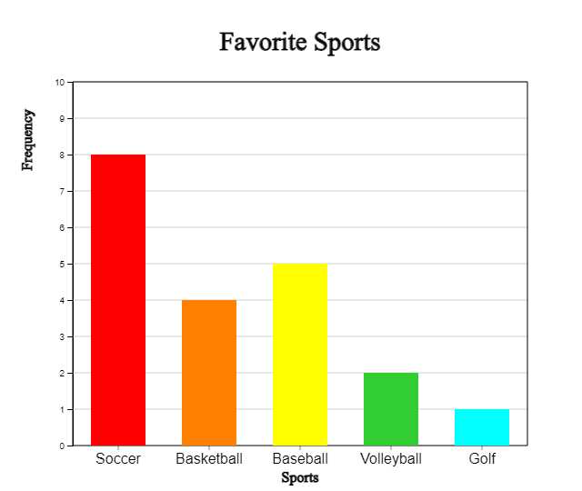
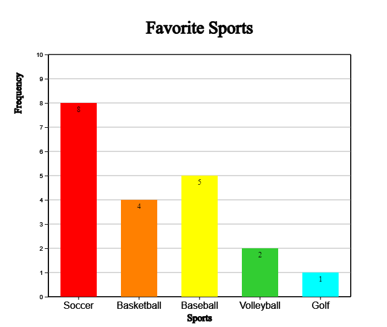

â Think |
The frequency table that surveyed 20 students in an elementary school class for their favorite sports is as follows:
[Table 2.1] Frequency table of favorite sports
|
||||||||||||
💠Explore |
What are some graphs that can be easily observed what a favorite sport is like? |
Chapter 2. Visualization of Qualitative Data
📊 🕠🌈 ⛅2.1 Bar/ Pie/ Rainbow/ Band Graph |
In the case of categorical data, the following graphs are drawn and analyzed. - bar graph
The data in the form of words are analyzed by drawing a word cloud. |
2.1 Bar/ Pie/ Rainbow/ Band Graph
When you ask your students about their favorite sports, they say, 'soccer', 'basketball', 'baseball', ... You can get answers like this, which is called qualitative data. Most qualitative data are referred to as categorical data because their values represent categories. Qualitative data can be summarized as a frequency table by counting the number of students in each category, and examine their characteristics using a bar graph, a pie graph, a rainbow graph and a band graph.
A bar graph shows the frequency of each category of data at the height of a rectangular bar. Spacing between the bars is used to emphasize that it is categorical data such as in <Figure 2.1>.

<Figure 2.1> Bar graph for favorite sports
A pie graph is a graph in which the frequency of each category in the whole data is divided into pie slices. For better comparison of proportions, draw the circle pieces in the order of the largest category in a clockwise direction.

<Figure 2.2> Pie graph for favorite sports
A rainbow graph is a modified form of a pie graph and is a graph in which the frequency of each category is divided into raibow pieces and displayed in the total data.

<Figure 2.3> Rainbow graph for favorite sports
A band graph is a modified form of a pie graph, and is a graph in which the frequency of each category is divided into rectangle pieces and displayed in the total data. It is also possible to sort in the order of the largest value of the category, but to distinguish it from the pie graph, the rectangle pieces are drawn in the order of the categories of the data.

<Figure 2.4> Band graph for favorite sports
🲠Practice 2.1
Draw a bar graph, pie graph, and band graph for favorite sports and observe which sports students like the most.Solution
Enter the desired title for 'Main Title', 'y title', and 'x title' and enter 'Category' and 'Frequency' as in <Figure 2.5>.
Click the [Bar Graph] button to display a bar graph as in <Figure 2.1>. You can also draw the bar graph again by selecting the color of the desired category. If you select the Emoji icon for each category on the far right and check ‘Emoji’ under the graph, a bar graph like <Figure 2.6> appears.
| Main Title | |||
| y title | x title | ||
| Category | Frequency | Relative Freq. % | Color | Emoji | |
| 1 | |||||
| 2 | |||||
| 3 | |||||
| 4 | |||||
| 5 | |||||
| 6 | |||||
| 7 | |||||
| 8 | |||||
| 9 | |||||
| Sum |
<Figure 2.5> Data input and Bar graph for favorite sports data
<Figure 2.6> Bar graph with Emoji icons for each category
In a similar way, if you check 'Frequency the frequency can be displayed on the bar as shown in <Figure 2.7>.

<Figure 2.7> Bar graph with frequencies
By using the (Soring) option under the graph, you can sort the bars in descending or ascending order of frequency as in <Figure 2.8> or <Figure 2.9>.

<Figure 2.8> Bar graph in descending order of frequencies

<Figure 2.9> Bar graph in ascending order of frequencies
Click the [Pie Graph] button to display a pie graph as in <Figure 2.2>.
Click the [Rainbow Graph] button to display a rainbow graph as in <Figure 2.3>.
Click the [Band Graph] button to display a band graph as in <Figure 2.4>.
🲠Practice 2.2
The fruits that elementary school students liked were as follows:
[Table 2.2] Fruits that students liked
| Fruits | Number of students |
|---|---|
| Strawberry | 15 |
| Apple | 10 |
| Banana | 25 |
| Grape | 20 |
| Orange | 10 |
| Tomato | 2 |
| Watermelon | 13 |
| Pineapple | 5 |
Draw Bar graph, Pie chart, Rainbow chart and Line graph using ã€eStatã€.
Solution

<Figure 2.10> Data input for favorite fruits
|
Enter the desired title for 'Main Title', 'y title', and 'x title' and
enter 'Category' and 'Frequency' in <Figure 2.10>. Select each fruit imoji icon on the far right.
Click the [Bar Graph] button and when the graph appears, check the 'Emoji' below the graph. You can also draw the bar graph again by selecting the color of the desired category. |

<Figure 2.11> Bar graph for favorite fruits with imoji
Click the [Pie Chart], [Rainbow Chart] and [Band Graph] button to display pie chart, rainbow chart, and band graph.
⏱ Exercise 2.1
|
According to the United Nations 2018 estimates, World largest 10 cities (mixture of city, metropolitan and urban area) are as follows:
[Table 2.3] World largest 10 cities (mixture of city, metropolitan and urban area)
|
Draw a bar graph, pie graph, rainbow graph and band graph to find out the characteristics.
⏱ Exercise 2.2
|
A summary of the survey of prospective jobs of elementary school students is as follows:
[Table 2.4] Prospective jobs of elementary school students
|
Draw a bar graph, a pie graph, rainbow graph and band graph to identify the characteristics.
2.2 Line Graph
â Think |
The following table shows the population of Korea, surveyed at approximately five-year intervals from 1925 to 2019.
[Table 2.5] Population of Korea
|
||||||||||||||||||||||||||||||||||||||||||
💠Explore |
What kind of graph can easily observe the data measured over time? |
Data measured over time is often observed using a line graph. In a line graph, each data is displayed as a dot on the XY plane, with the time such as month or year as the X axis and the value of the other variable as the Y value, and then connected with a line. It is similar to a bar graph, but the change in data over time can be observed.

<Figure 2.12> Line graph of Korea’s population
Observing the line graph of Korea's population, it can be seen that it was increased from 1925 to 1944, and then decreased significantly in 1949 and 1954 due to the Pacific War and the Korean War. After that, the population continued to increase significantly during the baby boom period in the late 1950s, but the trend of increase became moderate after 1990, and this trend has become more gentle after 2015.
🲠Practice 2.3
Draw and observe a line graph for the Korean population in [Table 2.5].Solution
Enter the ‘main title’, ‘y title’, ‘x title’ as shown in <Figure 2.13>, and enter the number of population by year in ‘Line 1’, the variable name next to it, and year data in ‘X’.
If you click the [Execute] button, a line graph as shown in <Figure 2.12> appears. You can also draw a line graph again by selecting the color of each line variable.
| Main Title | |||
| y title | x title | ||
| Data input | * Number of data ≤ 100 | Data Name | Color |
| Data Series 1 | |||
| Data Series 2 | |||
| Data Series 3 | |||
| Data Series 4 | |||
| X Series |
<Figure 2.13> Data input for Line Graph
When there are multiple variables observed at the same time, the line graph can draw multiple lines simultaneously on one graph.
🲠Practice 2.4
Draw and observe the line graph for the average temperature of Spring, Summer, Fall, and Winter season in Korea such as in [Table 2.6] on one graph.
[Table 2.6] Average temperature of each season in Korea (unit: degree in Celsius)
| Year | Spring | Summer | Fall | Winter |
|---|---|---|---|---|
| 1973 | 11.6 | 24.5 | 12.9 | -1.4 |
| 1974 | 10.8 | 22.4 | 13.0 | -0.1 |
| 1975 | 11.2 | 23.9 | 15.5 | 0.3 |
| 1976 | 10.9 | 22.6 | 12.5 | -1.7 |
| 1977 | 11.8 | 23.5 | 15.0 | 0.7 |
| 1978 | 11.7 | 24.7 | 14.3 | 2.2 |
| 1979 | 11.2 | 23.5 | 13.6 | -0.2 |
| 1980 | 11.0 | 22.1 | 13.4 | -2.3 |
| 1981 | 11.5 | 23.6 | 12.2 | -0.1 |
| 1982 | 12.0 | 23.4 | 14.3 | -0.2 |
| 1983 | 12.2 | 23.4 | 14.2 | -2.1 |
| 1984 | 10.7 | 24.3 | 13.8 | -0.6 |
| 1985 | 11.5 | 24.1 | 14.3 | -2.1 |
| 1986 | 11.4 | 22.9 | 12.6 | 1.2 |
| 1987 | 11.1 | 23.2 | 14.1 | 0.3 |
| 1988 | 11.0 | 23.6 | 13.6 | 1.7 |
| 1989 | 12.3 | 22.9 | 13.7 | 1.4 |
| 1990 | 11.7 | 24.3 | 15.2 | 0.2 |
| 1991 | 11.4 | 23.4 | 13.5 | 1.7 |
| 1992 | 11.6 | 23.2 | 13.4 | 1.1 |
| 1993 | 11.1 | 21.7 | 13.8 | 0.5 |
| 1994 | 11.8 | 25.3 | 14.8 | 0.8 |
| 1995 | 11.1 | 23.7 | 13.4 | -0.6 |
| 1996 | 10.6 | 23.5 | 14.1 | 0.5 |
| 1997 | 12.1 | 24.0 | 14.0 | 1.9 |
| 1998 | 13.4 | 23.1 | 15.4 | 1.6 |
| 1999 | 12.1 | 23.3 | 14.7 | 0.3 |
| 2000 | 11.6 | 24.2 | 13.7 | 0.3 |
| 2001 | 12.2 | 24.2 | 14.3 | 1.5 |
| 2002 | 12.7 | 23.1 | 12.5 | 0.9 |
| 2003 | 11.9 | 22.3 | 14.7 | 1.4 |
| 2004 | 12.2 | 24.0 | 14.7 | 0.5 |
| 2005 | 11.7 | 24.1 | 14.8 | -0.1 |
| 2006 | 11.5 | 23.6 | 15.1 | 2.4 |
| 2007 | 12.1 | 23.8 | 14.5 | 0.7 |
| 2008 | 12.5 | 23.7 | 15.1 | 1.7 |
| 2009 | 12.6 | 23.3 | 14.7 | 0.5 |
| 2010 | 10.8 | 24.9 | 14.5 | -0.7 |
| 2011 | 11.0 | 24.0 | 15.3 | -0.4 |
Solution
|
<Figure 2.14> Data input of average temperature by season for a line graph
|
Enter the 'main title', 'y title', and 'x title' as shown in <Figure 2.14>,
and enter the Spring, Summer, Fall, and Winter temperatures from 'Line 1' to 'Line 4'.Enter each variable name as Spring, Summer, Fall, Winter, and enter year data in 'X'.
If you click the [Execute] button, a line graph as shown in <Figure 2.15> appears. You can also draw a line graph again by selecting the color of each line. |
<Figure 2.15> Line graph of average temperature by season in Korea
Looking at the line graph of the average temperature by season, it can be seen that the average temperature is gradually increasing, especially in Winter.
⏱ Exercise 2.3
|
The following table shows the average life expectancy of Koreans surveyed every 10 years from 1970 to 2020. Draw a line graph to find out the characteristics.
[Table 2.7] Average life expectancy of Koreans
|
⏱ Exercise 2.4
|
The table below shows the amount of imports and exports of Korea from 2001 to 2020. Draw a line graph
to find out the characteristics.
[Table 2.8] Amount of imports and exports of Korea (unit: billion dollars)
|
2.3 Word Cloud
â Think |
The following is Wikipedia's explanation of the 4th industrial revolution.
[Table 2.9] Wikipedia's explanation of the 4th industrial revolution.
|
|
💠Explore |
What words are important to explain the 4th industrial revolution? |
A word cloud is a visual representation of information in text data. The word cloud examines the frequency of all the words appearing in a given document, and displays the importance of the frequently appearing words with font size, inclination, or color. >Figure 2.16&gr; is a word cloud for the explanation of the 4th industrial revolution above.

<Figure 2.16> Word cloud for Wikipedia’s explation of the 4th industrial revolution
The word cloud is useful for quickly recognizing the most prominent words in a docmuent and determining their relative importance. It can be used, for example, to visualize important topics in a political speech, or as a tool to determine hyperlinks to items related to a single word in social media software. Key words in the word cloud are also used as marketing terms related to a particular website.
There are many algorithms for a word cloud generation, and ã€eStat〠adopts the algorithm of d3 open software. d3 does not yet provide an accurate word cloud because there is no algorithm to remove unnecessary terms. Currently, the development of an algorithm that can display correlated words in a word cloud is in progress.
🲠Practice 2.5
Draw and observe the word cloud for the 4th industrial revolution in [Table 2.9].Solution
After copying the sentences in [Table 2.9] for data input as shown in t<Figure 2.17>, click the [Execute] button, and a word cloud as shown in <Figure 2.16> appears.
<Figure 2.17> Data input for word cloud
⏱ Exercise 2.5
|
The following are excerpts from US President John F. Kennedy's inaugural address. Create a word cloud for this inaugural address and analyze the key words.
[Table 2.11] Inaugral address of US President John F. Kennedy
|
Exercise
*** Select an answer and click [SUBMIT] button.
2.1 What is the name of the table by organizing the data as follows?
| Gender | Number of students |
|---|---|
| Male | 6 |
| Female | 4 |
2.2 Which of the following graphs is used for visualizing qualitative data?
2.3 Which of the following graphs is not used for visualizing qualitative data?